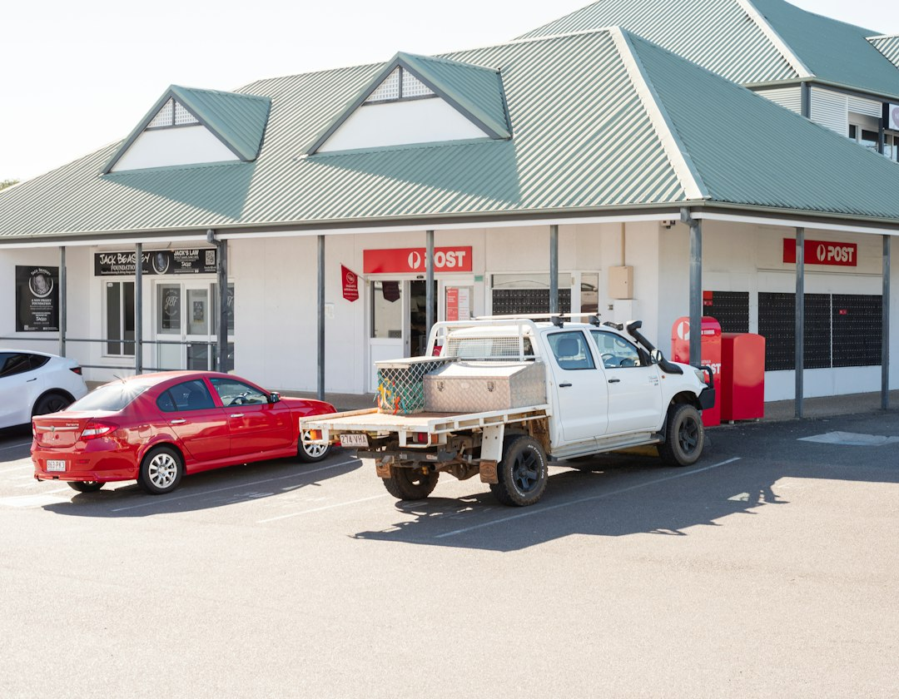

Common residential garage door repairs on the Gold Coast are published at about $150 to $500 including parts and labour, while a standard service is listed at $150 to $220, roller door repairs at $200 to $400, and opener replacement at $400 to $900 supplied and installed. The source page says quoted work is fixed price before it starts, has no hidden callout fees, and is handled by QBCC-licensed repairers across 15 Gold Coast suburbs.
For homeowners comparing garage door repairs gold coast options, the practical decision is matching the fault, door type, quote detail and local response before approving any work.
Garage Door Repairs Gold Coast Explained
The published service page for Garage Door Repairs Gold Coast centres the job around diagnosis, a written fixed-price quote and repairer licensing. For a homeowner, that means the first useful step is not guessing the part, but describing the symptom clearly enough for the right repairer to assess it.
Useful booking details include the door type, the suburb or postcode, whether the door is stuck open or closed, whether the motor responds, and whether the issue involves a roller door, sectional door, spring, track, panel, remote or gate motor. The source page says local repairers carry common parts and aim to respond the same day for urgent callouts, so a concise fault description can help the job be triaged.
Before approving work, ask for the licence class and number on the written quote, what parts and labour are included, whether any callout fee applies, and whether the repairer expects replacement rather than adjustment. The same topic is covered from a slightly different editorial angle in this Gold Coast garage door repair guide.
Cost Signals In The Published Prices
The source page gives several useful price bands. Most common residential repairs are described as sitting between $150 and $500 including parts and labour. A standard service is listed at $150 to $220, roller door repairs at $200 to $400, and opener replacement at $400 to $900 supplied and installed.
Those bands are not a substitute for a quote. The page itself says the repairer provides a firm written quote before work starts, and that all quotes, prices, rates and estimates shown are indicative. That distinction matters when the fault is not visible from the first description, such as a noisy door that could involve rollers, tracks, hinges, motor settings or another component.
- Lower range jobs: the source page places simple roller replacement, track adjustment and minor roller door issues toward the lower end.
- Higher range jobs: spring or motor replacement, drum replacement and custom parts are described as pushing costs higher.
- Opener choice: the page says chain-drive units are generally lower cost, while quieter belt-drive or battery-backup models sit higher.
Who This Applies To
This guide is for Gold Coast homeowners trying to decide what to ask before booking a garage door repair, service or opener replacement. It is most useful where the door is residential, the problem needs diagnosis, and the owner wants a written fixed-price quote before authorising work.
The supplied service page names general garage door repairs, roller door repairs, sectional and panel-lift repairs, garage door spring replacement and automatic gate motor work. It also mentions repairs for stuck, noisy or off-track roller doors, plus curtain, drum, motor, panel, hinge, spring and track issues.
It is less useful for estimating commercial roller door work or custom parts without inspection, because the source page says those can cost more. In that situation, the better question is what information the repairer needs to price the job firmly, what parts may need ordering, and whether the written quote separates labour, parts and any access-related work.
When A Service May Be Enough
A standard service is listed separately from a repair, which is helpful when the door still operates but has become noisy, uneven or unreliable. The service described on the source page includes lubrication, a tension check, safety beam test, remote check and a written condition report.
That does not mean every noisy door only needs servicing. A door that is off-track, has a broken or fatigued spring, or has a motor problem may need a specific repair. The published page separates spring replacement, roller door repairs, sectional door repairs and opener replacement, so the booking conversation should start with symptoms rather than a preferred product.
For beachside homes around Palm Beach, Currumbin and Elanora, the source page says coastal salt air is hard on springs and cables, and that rust-resistant hardware and more frequent servicing may be recommended. That is one of the few locality-specific clues given, so it is worth raising if the property is close to the coast.
Quote Questions That Protect The Decision
The clearest quote is written, fixed price and issued before work starts. The source page says there are no hidden callout fees, that licence details are shown on every written quote, and that homeowners approve the full cost upfront.
Practical questions to ask are straightforward: What fault did the repairer diagnose? Which part is being adjusted, repaired or replaced? Is the quoted price supplied and installed? Does the door need servicing as well as repair? Will the repair leave the door or gate working at completion, or is further work likely?
For spring jobs, the source page describes torsion and extension spring replacement as safety-critical handling, so the quote should be specific about the spring type and the door affected. For motor jobs, ask whether the issue is the opener itself, the remote, the safety beam or the lifting capacity. For roller doors, ask whether the price relates to the curtain, cable, drum, track or motor.
- Describe the fault. Note the door type, suburb or postcode, and whether the problem involves the motor, spring, track, curtain, panel, remote or gate.
- Request licence detail. Ask for the QBCC licence class and number to appear on the written quote, as stated on the source page.
- Compare the written quote. Check whether parts, labour, callout fees and any replacement component are included before approving the work.
- Match repair to symptom. Use the diagnosis to decide whether the job is a service, adjustment, part replacement or opener replacement.
| Situation | Likely discussion | Source detail to confirm |
|---|---|---|
| Door works but is noisy | Service or minor adjustment | Service includes lubrication, tension check, safety beam test, remote check and condition report |
| Door is stuck or off-track | Diagnostic repair quote | Common residential repairs are listed at $150 to $500 |
| Opener has failed | Motor, remote or safety beam diagnosis | Opener replacement is listed at $400 to $900 supplied and installed |
| Roller door has curtain, cable or drum issue | Roller-specific repair | Roller door repairs are listed at $200 to $400, with motor or drum replacement higher |
Common questions
How much should a common residential repair cost? The source page says most common residential garage door repairs on the Gold Coast sit between $150 and $500 including parts and labour. It also says the repairer provides a firm written quote before work starts.
Is a service different from a repair? Yes. The published service description includes lubrication, tension check, safety beam test, remote check and a written condition report. A repair is more specific to a diagnosed fault, such as a spring, motor, track, curtain or panel issue.
Does the source say repairers are licensed? Yes. The page says every repairer used for the job holds a current QBCC licence, and that the licence class and number appear on every written quote.
Which Gold Coast areas are specifically mentioned? The source says coverage spans 15 Gold Coast suburbs from Southport to Coolangatta, with hinterland pockets in between. It also names Palm Beach, Currumbin and Elanora in a coastal servicing context.
This guide covers residential garage door repair decisions, quote checks and published cost ranges for Gold Coast homeowners.